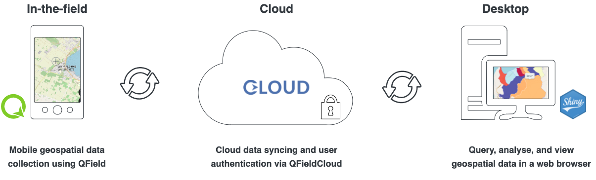

Documentation and tutorials
maplandscape is a workflow for:
- field-based mapping and survey data collection.
- using field data for monitoring, management, and decision making.

The maplandscape workflow uses QField mobile GIS for quick and easy data collection, QFieldCloud for large team user and data management, and QGIS or custom web mapping and analytics tools for data analysis and reporting.
Here, you will find:
- Tutorials that teach you how to use the applications that comprise maplandscape and create, implement, and manage large team mapping and survey campaigns.
- Best Practice Guides that demonstrate tips and tricks when using QField for various data collection projects.
- Reference for the technical details to use and extend the software.